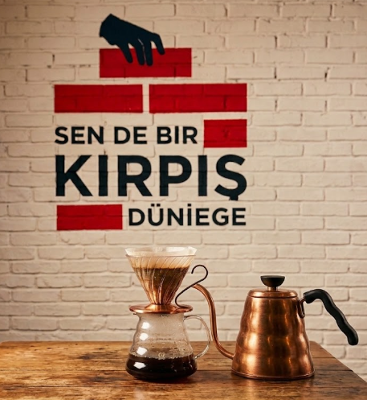
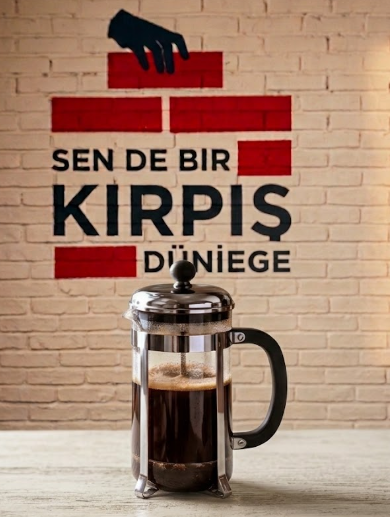
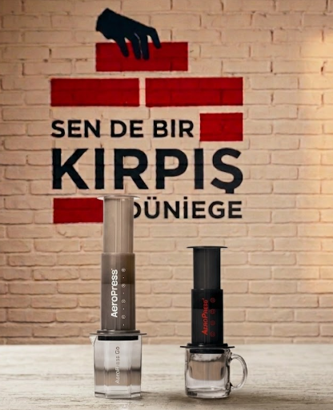

Brewing Guides
Learn the basics of preparing coffee at home with three popular methods: V60, French Press and AeroPress. These guides provide simple starting points for coffee, water, grind size and brewing time.
About Home Brewing
Home brewing gives you control over coffee strength, water, grind size and brewing time. Small changes can affect the final taste, so it is useful to change one part of the process at a time.
The ratios and instructions below are starting points rather than strict rules. Coffee beans, grinders, water and personal taste can all affect the result.
V60

V60 is a pour-over method that uses a cone-shaped dripper and paper filter. Water is poured over ground coffee in controlled stages.
A good starting ratio is approximately 1 g coffee : 16-17 g water.
- Place the paper filter in the dripper.
- Rinse the filter with hot water.
- Add ground coffee.
- Bloom the coffee with a small amount of water.
- Pour the remaining water slowly and evenly.
- Allow the coffee to finish dripping.
Starting ratio: 1:16-17
The next content starts below the floated image because
clear: both prevents it from wrapping beside the image.
French Press

French Press brewing uses immersion. Coffee grounds stay in contact with water before the filter is pressed down.
A useful starting ratio is approximately 1 g coffee : 15 g water.
- Add coarse-ground coffee to the French Press.
- Add hot water.
- Stir gently to wet the grounds.
- Wait for approximately four minutes.
- Press the filter down slowly.
- Serve the coffee immediately.
Clearing the float makes sure the next content starts below the floated image instead of wrapping beside it.
AeroPress

AeroPress is an immersion and pressure-based brewing method. It can produce a clean and concentrated cup in a relatively short time.
A simple starting ratio is approximately 1 g coffee : 15 g water.
- Place the filter in the filter cap.
- Rinse the filter with hot water.
- Add medium-fine ground coffee.
- Add hot water and stir.
- Allow the coffee to brew briefly.
- Press slowly into the cup.
The clear property keeps this content below the floated image.
Water-to-Coffee Starting Ratios
| Method | Coffee | Water | Starting Ratio |
|---|---|---|---|
| V60 | 15 g | 250 g | 1:16-17 |
| French Press | 20 g | 300 g | 1:15 |
| AeroPress | 15 g | 225 g | 1:15 |
Grind Size Guide
| Method | Starting Grind | Brewing Style |
|---|---|---|
| V60 | Medium | Pour-over |
| French Press | Coarse | Immersion |
| AeroPress | Medium-fine | Immersion / pressure |
Troubleshooting
- Coffee tastes too bitter
- Try a coarser grind, shorter brewing time or slightly cooler water.
- Coffee tastes too sour
- Try a finer grind, longer brewing time or slightly hotter water.
- Coffee tastes weak
- Check the coffee-to-water ratio and consider using more coffee.
- Coffee tastes too strong
- Try using more water or slightly less coffee.
Brewing Notes
You can record your brewing variables so you can compare different attempts.
Method: V60 Coffee: 15 g Water: 250 ml Grind: Medium Time: Record your brewing time Result: Record the taste and strength after brewing.
Save your notes with Ctrl + S.
Explore More
- Full Menu — see coffee, tea, food and other drinks.
- Coffee Blog — read coffee stories and customer reviews.
- Subscriptions — explore coffee subscription options.
- Contact Us — ask Tokyo Coffee about products and services.
Tip: Start with the recommended ratio and change one variable at a time when experimenting.
Ask About Brewing
If you have a question about brewing, use the form below to describe your method and problem.
Brewing Information
This section uses the normal static positioning mode. Static positioning is the default document flow and does not create a special positioning context.